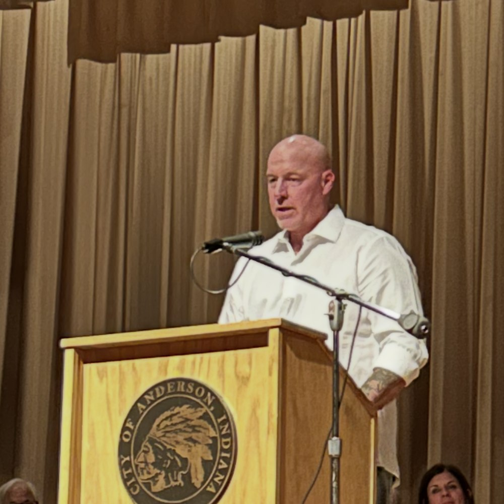
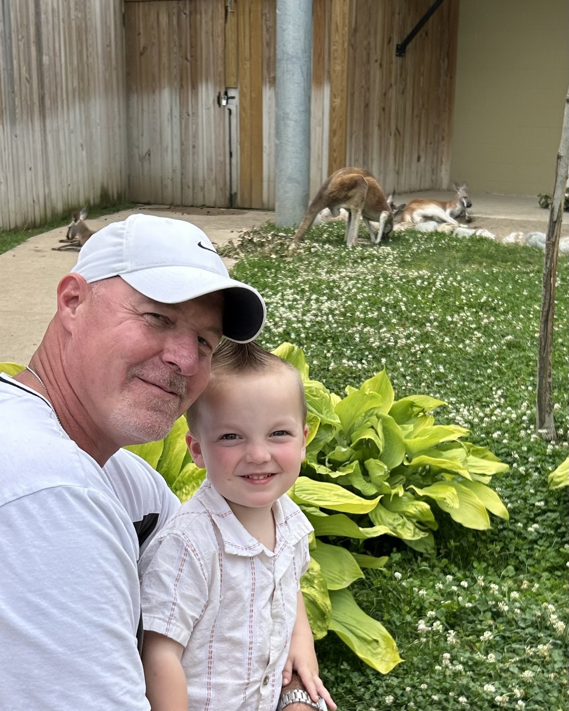

“My path through recovery has been a mission for me to be a dad to my son, Charley. Dedicated Dads helped me through every stage—working with the Department of Child Services, meeting my expenses, teaching me about active and responsible fatherhood, and just plain encouragement.”
Rick — graduating from Problem Solving Court of Madison County